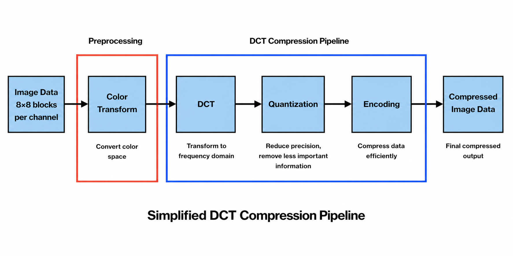

Discrete cosine transform (DCT)
Block-wise frequency decorrelation before quantization, the same building block as baseline JPEG.
What we use it for
After optional color transforms (see svd / pca), we reshape the image into non-overlapping 8×8 blocks per channel. A type-II DCT with orthonormal normalization is applied in 2D on each block so energy concentrates in a few low-frequency coefficients. That concentration is what makes aggressive quantization and run-length coding worthwhile.
In code, the hybrid pipeline applies dctn on the blocked tensor (spatial axes of each block). The inverse path uses the matching idctn with the same normalization so round-trip is consistent.

Zig-zag & DC / AC split
For entropy coding we reorder each quantized block into a zig-zag scan: the DC term (average intensity of the block) is handled separately from AC coefficients. AC values are run-length encoded on zeros; the DC sequence is highly correlated block-to-block, so we run DPCM on the DCs before entropy coding.
Why DCT Works
Natural images vary smoothly, meaning most energy is concentrated in low-frequency components. The DCT transforms pixel values into frequency coefficients, concentrating this energy in the top-left of each block. This allows us to retain a small number of coefficients while discarding less important high-frequency information, reducing file size with minimal visual loss.
Figures
Same DCT-focused figures that appear in the progress report, shown here for the technique page.

Spatial domain
Baseline before DCT.

8×8 DCT blocks
Frequency-domain view per block.

DC only (1 coefficient)
Keeping only one coefficient illustrates how much energy lives in the DC and lowest AC terms.

Low-frequency reconstruction (3 coefficients)
Stepping up retention slightly restores more edge structure for a modest bit cost.
Observed Results
The DCT results clearly demonstrate how image energy is concentrated in low-frequency components. When transformed into the frequency domain, most important visual information is contained in only a few coefficients. The original image was approximately 1.2 MB, while the compressed version using aggressive coefficient reduction was under 200 KB, demonstrating a compression ratio greater than 5×.
| Method | Quality | Compression |
|---|---|---|
| 1 coefficient | Low | ~6–8× |
| 3 coefficients | Moderate | ~4–6× |
When keeping only one coefficient per 8×8 block (DC component), the image is heavily compressed. The reconstructed image retains overall brightness and structure but loses nearly all fine detail. This corresponds to a very high compression ratio of approximately 6–8×, but with noticeable visual degradation.
When increasing to three coefficients per block, additional low-frequency information is preserved. This significantly improves image quality, restoring edges and textures while still maintaining strong compression. The compression ratio in this case is approximately 4–6×, demonstrating a better balance between size and quality.
- 1 coefficient: Low PSNR (visibly degraded image)
- 3 coefficients: Higher PSNR (improved structure and clarity)
The DCT coefficient visualization further confirms this behavior. Most of the energy is concentrated in the upper-left (low-frequency) region, while high-frequency components are sparse. This sparsity enables effective compression through quantization and entropy coding.
Summary: Increasing the number of retained DCT coefficients improves image quality while increasing file size, emphasizing the tradeoff between compression efficiency and visual fidelity.